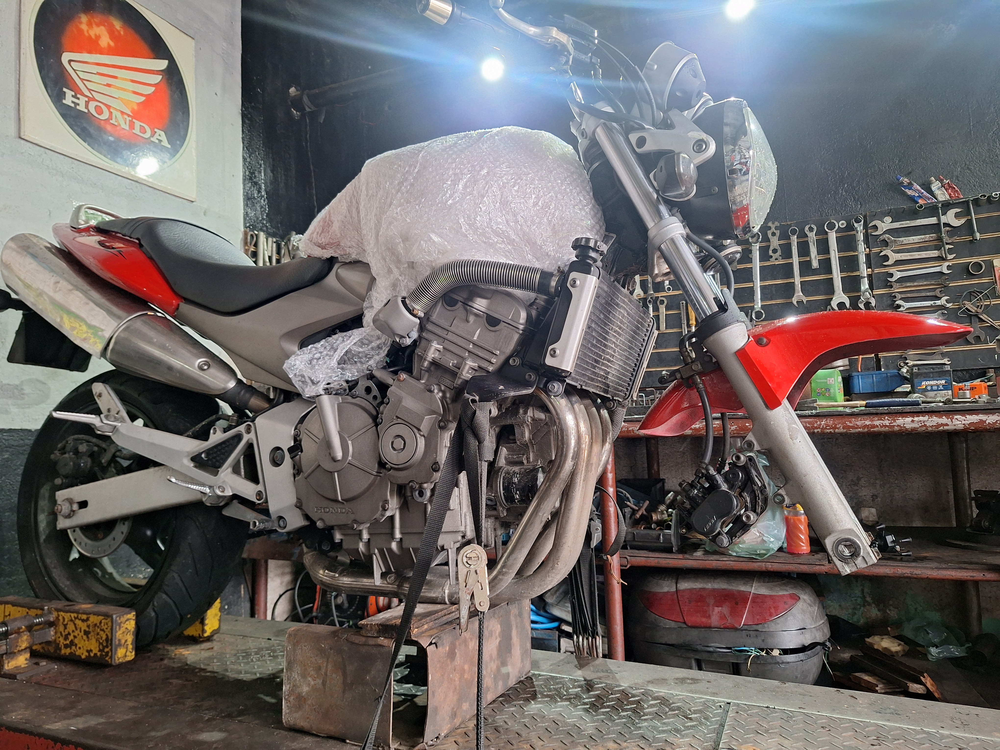
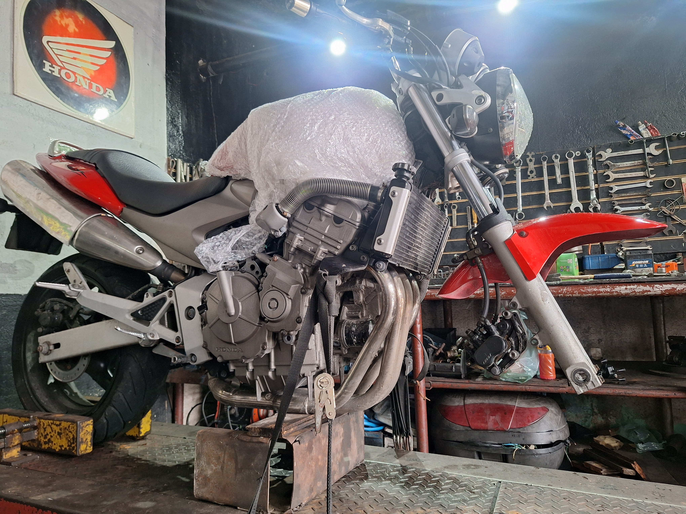
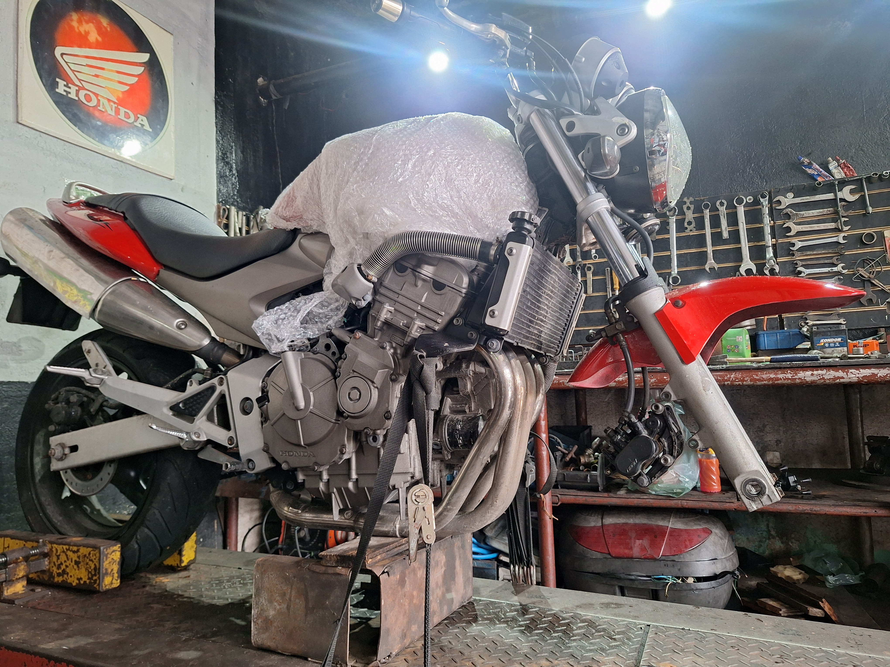
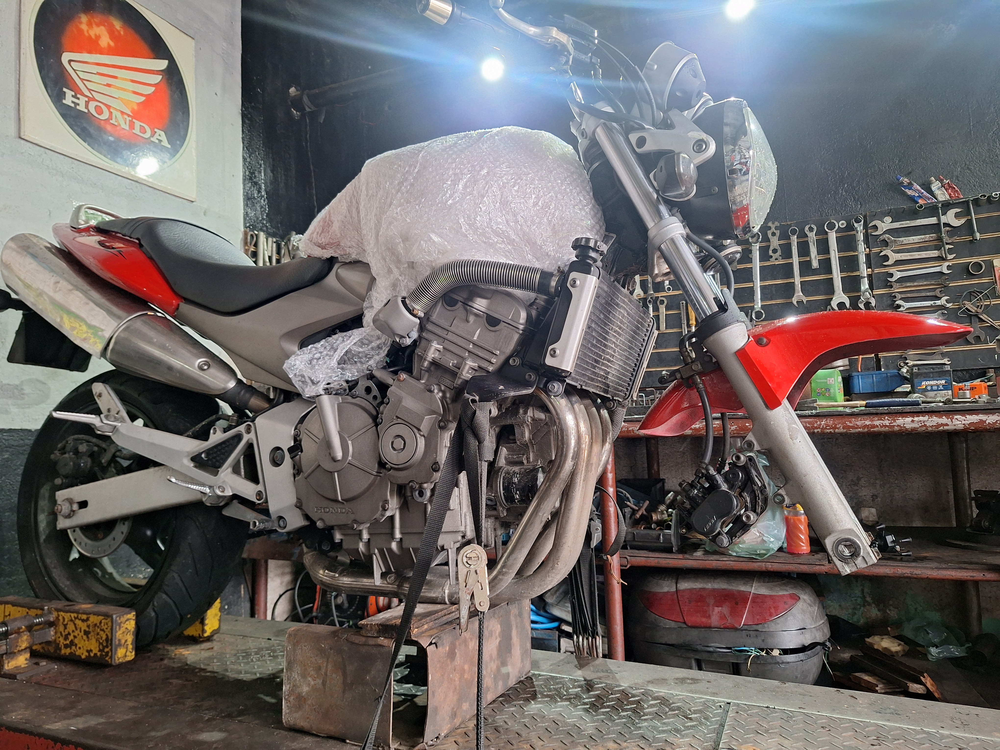

 

teste
Quem Somos — A empresa Erick Motors atua há mais de 20 anos no mercado, oferecendo serviços especializados em manutenção e reparos de motocicletas. Nossa experiência abrange motos de alta e baixa cilindrada, sempre com foco em qualidade, segurança e transparência. Ao longo de duas décadas, construímos uma reputação sólida baseada em confiança, atendimento personalizado e resultado. Trabalhamos com dedicação para garantir que cada moto receba o cuidado técnico necessário, utilizando equipamentos modernos e profissionais altamente capacitados. Na Erick Motors, sua moto está em boas mãos — experiência que você sente na performance e na segurança do dia a dia.